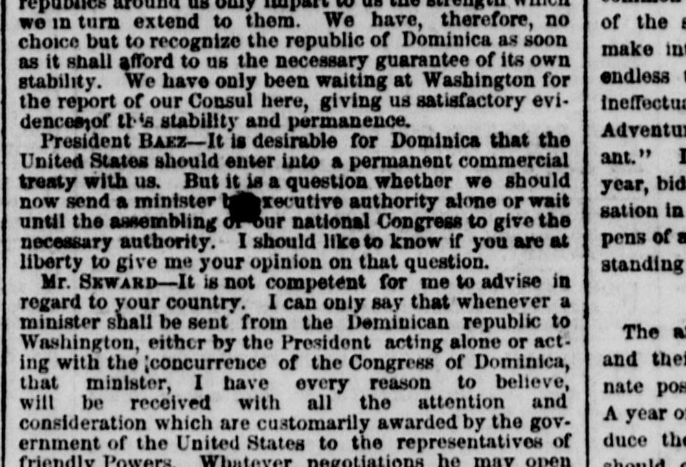

I can only say that whenever a minister shall be sentSolo puedo decir que cuandoquiera que un ministro sea enviado
The New York Herald. New York [N.Y.], February 5, 1866. Page 5. View the originalVer el original

 See the full pageVer la página completa
See the full pageVer la página completa
The New York Herald reported on February 5, 1866, that Secretary Seward stated the United States would receive a minister from the Dominican Republic and conduct negotiations in accordance with the law of nations and friendly relations. The newspaper noted that the U.S. government had recognized the independence of Dominica and that the President nominated General Cazenau, who was engaged as a merchant there, as Minister to that republic. Additionally, the excerpt briefly reported on a fire that broke out in a closet of a building on Chatham Street between 12 and 1 o'clock on Sunday morning.The New York Herald publicó el 5 de febrero de 1866 que el secretario Seward declaró que los Estados Unidos recibirían a un ministro de la República Dominicana y entablarían negociaciones con arreglo al derecho de gentes y a las relaciones amistosas entre naciones. El diario consignó que el gobierno de Washington reconoció la independencia de Santo Domingo y que el presidente propuso al general Cazneau, quien residía allí como comerciante, como ministro plenipotenciario ante esa república. Asimismo, el texto hizo una breve mención sobre un siniestro ocurrido en el armario de una edificación de Chatham Street entre las doce y la una de la madrugada del domingo.
FULL TEXT:TEXTO COMPLETO:
republics around us only impart to us the strength which we in turn extend to them. We have, therefore, no choice but to recognize the republic of Dominica as soon as it shall afford to us the necessary guarantee of its own stability. We have only been waiting at Washington for the report of our Consul here, giving us satisfactory evidences of this stability and permanence.repúblicas que nos rodean solo nos imparten la fuerza que a nuestra vez les extendemos a ellas. No tenemos, por tanto, otra opción que reconocer la república de Dominica tan pronto como nos ofrezca la garantía necesaria de su propia estabilidad. Solo hemos estado esperando en Washington el informe de nuestro Cónsul aquí, que nos diera evidencias satisfactorias de esta estabilidad y permanencia.
President BAEZ—It is desirable for Dominica that the United States should enter into a permanent commercial treaty with us. But it is a question whether we should now send a minister b[illegible] xecutive authority alone or wait until the assembling o[illegible] our national Congress to give the necessary authority. I should like to know if you are at liberty to give me your opinion on that question.El Presidente BÁEZ—Es deseable para Dominica que los Estados Unidos entren en un tratado comercial permanente con nosotros. Pero es cuestión de si debemos ahora enviar un ministro co[ilegible] la autoridad ejecutiva solamente o esperar hasta la reunión d[ilegible] nuestro Congreso nacional para dar la autoridad necesaria. Quisiera saber si usted tiene libertad de darme su opinión sobre esa cuestión.
Mr. SEWARD—It is not competent for me to advise in regard to your country. I can only say that whenever a minister shall be sent from the Dominican republic to Washington, either by the President acting alone or acting with the concurrence of the Congress of Dominica, that minister, I have every reason to believe, will be received with all the attention and consideration which are customarily awarded by the government of the United States to the representatives of friendly Powers. Whatever negotiations he may openEl Sr. SEWARD—No me es competente aconsejar en lo que respecta a su país. Solo puedo decir que cuandoquiera que se envíe un ministro desde la república dominicana a Washington, ya sea por el Presidente actuando solo o actuando con la concurrencia del Congreso de Dominica, ese ministro, tengo toda razón para creer, será recibido con toda la atención y consideración que acostumbra otorgar el gobierno de los Estados Unidos a los representantes de las Potencias amigas. Cualesquiera negociaciones que pueda abrir
In this article, the newspaper calls the country 'Dominica.' It means the Dominican Republic, not the island of Dominica.En este artículo, el periódico llama al país «Dominica». Se refiere a la República Dominicana, no a la isla de Dominica.